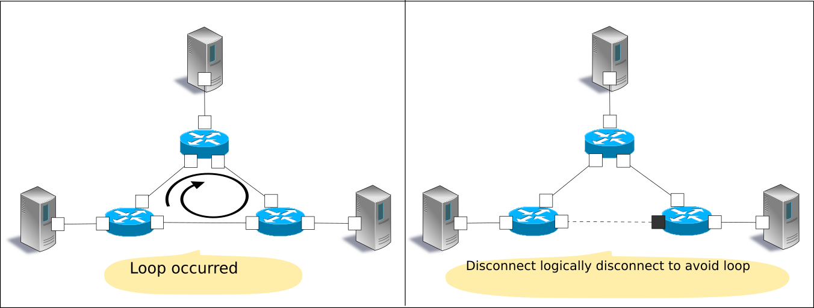
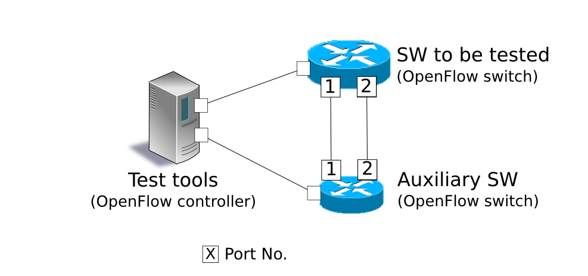

This section explains how to use the test tool to verify the degree of compliance of an OpenFlow switch with the OpenFlow specifications.
This tool is used to verify the status of support by OpenFlow switch for the OpenFlow specification by conducting a flow entry registration/packet application to the test subject OpenFlow switch according to a test pattern file and comparing the result of processing by the OpenFlow switch of packet rewriting and transfer (or discard) against the expected processing result described in the test pattern file.
This tool is compatible with FlowMod message test of OpenFlow version 1.3.
| Test subject message | Corresponding parameters |
|---|---|
| OpenFlow1.3 FlowMod message | match (Excludes IN_PHY_PORT) actions (Excludes SET_QUEUE, GROUP) |
“Packet Library” is used to confirm packet rewriting and results generation of packets to be applied.
The following shows an image of operation when you run the test tool. “flow entry to be registered, “application packet” and “expected processing result to” are described in the test pattern file. How to set up your environment for the tool execution is described later (refer to Tool execution environment)
The specified test items of the test pattern file are run in order and test results (OK / ERROR) are output. If a test result is ERROR, details of the error are also output.
--- Test start ---
match: 29_ICMPV6_TYPE
ethernet/ipv6/icmpv6(type=128)-->'icmpv6_type=128,actions=output:2' OK
ethernet/ipv6/icmpv6(type=128)-->'icmpv6_type=128,actions=output:CONTROLLER' OK
ethernet/ipv6/icmpv6(type=135)-->'icmpv6_type=128,actions=output:2' OK
ethernet/vlan/ipv6/icmpv6(type=128)-->'icmpv6_type=128,actions=output:2' ERROR
Received incorrect packet-in: ethernet(ethertype=34525)
ethernet/vlan/ipv6/icmpv6(type=128)-->'icmpv6_type=128,actions=output:CONTROLLER' ERROR
Received incorrect packet-in: ethernet(ethertype=34525)
match: 30_ICMPV6_CODE
ethernet/ipv6/icmpv6(code=0)-->'icmpv6_code=0,actions=output:2' OK
ethernet/ipv6/icmpv6(code=0)-->'icmpv6_code=0,actions=output:CONTROLLER' OK
ethernet/ipv6/icmpv6(code=1)-->'icmpv6_code=0,actions=output:2' OK
ethernet/vlan/ipv6/icmpv6(code=0)-->'icmpv6_code=0,actions=output:2' ERROR
Received incorrect packet-in: ethernet(ethertype=34525)
ethernet/vlan/ipv6/icmpv6(code=0)-->'icmpv6_code=0,actions=output:CONTROLLER' ERROR
Received incorrect packet-in: ethernet(ethertype=34525)
--- Test end ---
This section explains how to use the test tool.
You need to create a test pattern file in accordance with the test pattern that you want to test.
A test pattern file is a text file that has a ”.json” extension. It is described using the following format.
[
"xxxxxxxxxx", # Test item name
{
"description": "xxxxxxxxxx", # Description of the test content
"prerequisite": [
{
"OFPFlowMod": {...} # Flow entry to register
}, # (Describe OFPFlowMod of Ryu in json format)
{...}, # In case of packet transfer (actions=output),
{...} # specify "2" as the output port number.
],
"tests": [
{
"ingress": [ # Packet to be applied
"ethernet(...)", # (Describe in format of Ryu packet library constructor)
"ipv4(...)",
"tcp(...)"
],
# Expected processing results
# Depending on the type of processing results, describe either (a)(b)(c)
# (a) Confirmation test of packet transfer (actions=output:X)
"egress": [ # Expected transfer packet
"ethernet(...)",
"ipv4(...)",
"tcp(...)"
]
# (b) Confirmation test of Packet-In (actions=CONTROLLER)
"PACKET_IN": [ # Expected Packet-In data
"ethernet(...)",
"ipv4(...)",
"tcp(...)"
]
# (c) Confirmation test of table-miss
"table-miss": [ # flow table ID that is expected to be table-miss
0
]
},
{...},
{...}
]
}, # Test 1
{...}, # Test 2
{...} # Test 3
]
Note
As a sample test pattern, the source tree of Ryu offers a test pattern file to check if each parameter that can be specified in the match/actions of OpenFlow1.3 FlowMod message works properly or not.
ryu/tests/switch/of13
The environment for test execution tools is described below.
As an auxiliary switch, an OpenFlow switch that can be used to perform following the operation successfully is required.
Note
The source tree of Ryu offers an environment build script that allows realization of a tool execution environment on mininet that uses Open vSwitch as a test target switch.
ryu/tests/switch/run_mininet.py
A example script is described in “Test tool usage example”.
The test tool is available on the source tree on Ryu.
Source code Explanation ryu/tests/switch/tester.py Test tool ryu/tests/switch/of13 Sample of test pattern file ryu/tests/switch/run_mininet.py Test environment build script
The test tool is executed by the following command.
$ ryu-manager [--test-switch-target DPID] [--test-switch-tester DPID]
[--test-switch-dir DIRECTORY] ryu/tests/switch/tester.py
Option Explanation Default value –test-switch-target Data path ID of test target switch 0000000000000001 –test-switch-tester Data path ID of auxiliary switch 0000000000000002 –test-switch-dir Directory path of test pattern file ryu/tests/switch/of13
Note
Since the test tool is created as a Ryu application and inherits ryu.base.app_manager.RyuApp, it supports output of debugging information by the –verbose option, as with other Ryu applications.
After starting the test tool, when the auxiliary switch and test target switch are connected to the controller, the test starts based on the test pattern file that you specify.
The following is the procedure to execute the test tool using a sample test pattern and original test pattern file.
The following shows the procedure of using sample test pattern (ryu/tests/switch/of13) of the source tree of the Ryu to check the through operation of match/actions of FlowMod messages.
In this procedure, the test environment is constructed using the test environment build script (ryu / tests / switch / run_mininet.py). Please refer to “Switching Hub ” for environment settings and the login method for usage of the VM image.
Building the test environment
Log in to the VM environment and run the test environment build script.
ryu@ryu-vm:~$ sudo ryu/ryu/tests/switch/run_mininet.pyExecution result of the net command is as follows.
mininet> net c0 s1 lo: s1-eth1:s2-eth1 s1-eth2:s2-eth2 s2 lo: s2-eth1:s1-eth1 s2-eth2:s1-eth2
Execution of the test tool
For execution of test tool, open xterm of controller.
mininet> xterm c0Execute test tool from xterm of “Node: c0 (root)” At this time, as the directory for the test pattern file, specify the directory of the sample test pattern (ryu/tests/switch/of13). Since the data path ID of the test target switch and auxiliary switch in the mininet environment has the default value of each option of –test-switch-target / –test-switch-tester, it the option specification is omitted.
Node: c0:
root@ryu-vm:~$ ryu-manager --test-switch-dir ryu/ryu/tests/switch/of13 ryu/ryu/tests/switch/tester.pyWhen the tool is executed it appears as follows and waits until the test target switch and auxiliary switch is connected to the controller.
root@ryu-vm:~$ ryu-manager --test-switch-dir ryu/ryu/tests/switch/of13/ ryu/ryu/tests/switch/tester.py loading app ryu/ryu/tests/switch/tester.py loading app ryu.controller.ofp_handler instantiating app ryu/ryu/tests/switch/tester.py of OfTester target_dpid=0000000000000001 tester_dpid=0000000000000002 Test files directory = ryu/ryu/tests/switch/of13/ instantiating app ryu.controller.ofp_handler of OFPHandler --- Test start --- waiting for switches connection...When the test target switch and auxiliary switch is connected to the controller, the test begins.
root@ryu-vm:~$ ryu-manager --test-switch-dir ryu/ryu/tests/switch/of13/ ryu/ryu/tests/switch/tester.py loading app ryu/ryu/tests/switch/tester.py loading app ryu.controller.ofp_handler instantiating app ryu/ryu/tests/switch/tester.py of OfTester target_dpid=0000000000000001 tester_dpid=0000000000000002 Test files directory = ryu/ryu/tests/switch/of13/ instantiating app ryu.controller.ofp_handler of OFPHandler --- Test start --- waiting for switches connection... dpid=0000000000000002 : Join tester SW. dpid=0000000000000001 : Join target SW. action: 00_OUTPUT ethernet/ipv4/tcp-->'actions=output:2' OK ethernet/ipv6/tcp-->'actions=output:2' OK ethernet/arp-->'actions=output:2' OK action: 11_COPY_TTL_OUT ethernet/mpls(ttl=64)/ipv4(ttl=32)/tcp-->'eth_type=0x8847,actions=copy_ttl_out,output:2' ERROR Failed to add flows: OFPErrorMsg[type=0x02, code=0x00] ethernet/mpls(ttl=64)/ipv6(hop_limit=32)/tcp-->'eth_type=0x8847,actions=copy_ttl_out,output:2' ERROR Failed to add flows: OFPErrorMsg[type=0x02, code=0x00] ...When all testing of the sample test pattern file under ryu/tests/switch/of13 is complete, the test tool ends.
Sample test pattern file list
Offers a test pattern that registers flow entries corresponding to each setting in the match/actions and applies multiple patterns of packets that match (or do not match) flow entries.ryu/tests/switch/of13/action: 00_OUTPUT.json 20_POP_MPLS.json 11_COPY_TTL_OUT.json 23_SET_NW_TTL_IPv4.json 12_COPY_TTL_IN.json 23_SET_NW_TTL_IPv6.json 15_SET_MPLS_TTL.json 24_DEC_NW_TTL_IPv4.json 16_DEC_MPLS_TTL.json 24_DEC_NW_TTL_IPv6.json 17_PUSH_VLAN.json 25_SET_FIELD 17_PUSH_VLAN_multiple.json 26_PUSH_PBB.json 18_POP_VLAN.json 26_PUSH_PBB_multiple.json 19_PUSH_MPLS.json 27_POP_PBB.json 19_PUSH_MPLS_multiple.json ryu/tests/switch/of13/action/25_SET_FIELD: 03_ETH_DST.json 14_TCP_DST_IPv4.json 24_ARP_SHA.json 04_ETH_SRC.json 14_TCP_DST_IPv6.json 25_ARP_THA.json 05_ETH_TYPE.json 15_UDP_SRC_IPv4.json 26_IPV6_SRC.json 06_VLAN_VID.json 15_UDP_SRC_IPv6.json 27_IPV6_DST.json 07_VLAN_PCP.json 16_UDP_DST_IPv4.json 28_IPV6_FLABEL.json 08_IP_DSCP_IPv4.json 16_UDP_DST_IPv6.json 29_ICMPV6_TYPE.json 08_IP_DSCP_IPv6.json 17_SCTP_SRC_IPv4.json 30_ICMPV6_CODE.json 09_IP_ECN_IPv4.json 17_SCTP_SRC_IPv6.json 31_IPV6_ND_TARGET.json 09_IP_ECN_IPv6.json 18_SCTP_DST_IPv4.json 32_IPV6_ND_SLL.json 10_IP_PROTO_IPv4.json 18_SCTP_DST_IPv6.json 33_IPV6_ND_TLL.json 10_IP_PROTO_IPv6.json 19_ICMPV4_TYPE.json 34_MPLS_LABEL.json 11_IPV4_SRC.json 20_ICMPV4_CODE.json 35_MPLS_TC.json 12_IPV4_DST.json 21_ARP_OP.json 36_MPLS_BOS.json 13_TCP_SRC_IPv4.json 22_ARP_SPA.json 37_PBB_ISID.json 13_TCP_SRC_IPv6.json 23_ARP_TPA.json 38_TUNNEL_ID.json ryu/tests/switch/of13/match: 00_IN_PORT.json 13_TCP_SRC_IPv4.json 25_ARP_THA.json 02_METADATA.json 13_TCP_SRC_IPv6.json 25_ARP_THA_Mask.json 02_METADATA_Mask.json 14_TCP_DST_IPv4.json 26_IPV6_SRC.json 03_ETH_DST.json 14_TCP_DST_IPv6.json 26_IPV6_SRC_Mask.json 03_ETH_DST_Mask.json 15_UDP_SRC_IPv4.json 27_IPV6_DST.json 04_ETH_SRC.json 15_UDP_SRC_IPv6.json 27_IPV6_DST_Mask.json 04_ETH_SRC_Mask.json 16_UDP_DST_IPv4.json 28_IPV6_FLABEL.json 05_ETH_TYPE.json 16_UDP_DST_IPv6.json 29_ICMPV6_TYPE.json 06_VLAN_VID.json 17_SCTP_SRC_IPv4.json 30_ICMPV6_CODE.json 06_VLAN_VID_Mask.json 17_SCTP_SRC_IPv6.json 31_IPV6_ND_TARGET.json 07_VLAN_PCP.json 18_SCTP_DST_IPv4.json 32_IPV6_ND_SLL.json 08_IP_DSCP_IPv4.json 18_SCTP_DST_IPv6.json 33_IPV6_ND_TLL.json 08_IP_DSCP_IPv6.json 19_ICMPV4_TYPE.json 34_MPLS_LABEL.json 09_IP_ECN_IPv4.json 20_ICMPV4_CODE.json 35_MPLS_TC.json 09_IP_ECN_IPv6.json 21_ARP_OP.json 36_MPLS_BOS.json 10_IP_PROTO_IPv4.json 22_ARP_SPA.json 37_PBB_ISID.json 10_IP_PROTO_IPv6.json 22_ARP_SPA_Mask.json 37_PBB_ISID_Mask.json 11_IPV4_SRC.json 23_ARP_TPA.json 38_TUNNEL_ID.json 11_IPV4_SRC_Mask.json 23_ARP_TPA_Mask.json 38_TUNNEL_ID_Mask.json 12_IPV4_DST.json 24_ARP_SHA.json 39_IPV6_EXTHDR.json 12_IPV4_DST_Mask.json 24_ARP_SHA_Mask.json 39_IPV6_EXTHDR_Mask.json
The following is the procedure to run the test tool by creating an original test pattern.
The following is an example of creating a test tool that checks if it has a function to process the match/actions required for OpenFlow switch to implement the router function.
Creating the test pattern file
It will test the following flow entry, which has a function for the router to forward packets according to the routing table, and check if it is working correctly.
match actions Destination IP address range “192.168.30.0/24” Rewrite the source MAC address to “aa:aa:aa:aa:aa:aa”.
Rewrite the destination MAC address to “bb:bb:bb:bb:bb:bb”
TTL decrement
Packet forwarding
Create a test pattern file to perform this test pattern.
File name: sample_test_pattern.json
[
"sample: Router test",
{
"description": "static routing table",
"prerequisite": [
{
"OFPFlowMod": {
"table_id": 0,
"match": {
"OFPMatch": {
"oxm_fields": [
{
"OXMTlv": {
"field": "eth_type",
"value": 2048
}
},
{
"OXMTlv": {
"field": "ipv4_dst",
"mask": 4294967040,
"value": "192.168.30.0"
}
}
]
}
},
"instructions":[
{
"OFPInstructionActions": {
"actions":[
{
"OFPActionSetField":{
"field":{
"OXMTlv":{
"field":"eth_src",
"value":"aa:aa:aa:aa:aa:aa"
}
}
}
},
{
"OFPActionSetField":{
"field":{
"OXMTlv":{
"field":"eth_dst",
"value":"bb:bb:bb:bb:bb:bb"
}
}
}
},
{
"OFPActionDecNwTtl":{}
},
{
"OFPActionOutput": {
"port":2
}
}
],
"type": 4
}
}
]
}
}
],
"tests":[
{
"ingress":[
"ethernet(dst='22:22:22:22:22:22',src='11:11:11:11:11:11',ethertype=2048)",
"ipv4(tos=32, proto=6, src='192.168.10.10', dst='192.168.30.10', ttl=64)",
"tcp(dst_port=2222, option='\\x00\\x00\\x00\\x00', src_port=11111)",
"'\\x01\\x02\\x03\\x04\\x05\\x06\\x07\\x08\\t\\n\\x0b\\x0c\\r\\x0e\\x0f'"
],
"egress":[
"ethernet(dst='bb:bb:bb:bb:bb:bb',src='aa:aa:aa:aa:aa:aa',ethertype=2048)",
"ipv4(tos=32, proto=6, src='192.168.10.10', dst='192.168.30.10', ttl=63)",
"tcp(dst_port=2222, option='\\x00\\x00\\x00\\x00', src_port=11111)",
"'\\x01\\x02\\x03\\x04\\x05\\x06\\x07\\x08\\t\\n\\x0b\\x0c\\r\\x0e\\x0f'"
]
}
]
}
]
Building a test environment
Build a test environment using a test environment build script. Please refer to the execution procedure in Procedure for Executing Sample Test Pattern.
Executing the test tool
Execute the test tool from Xterm from the controller by specifying the original test pattern you just created. For –test-switch-dir option, you can also directly specify a file as well as a directory. In order to confirm the contents of packets sent and received, the –verbose option is also specified.
Node: c0:
root@ryu-vm:~$ ryu-manager --verbose --test-switch-dir ./sample_test_pattern.json ryu/ryu/tests/switch/tester.pyWhen the test target switch and auxiliary switch is connected to the controller, the test begins.
In log output of “dpid=0000000000000002 : receive_packet...”, you can see that the expected output packet set in egress packed of the test pattern file was sent. Note that only logs the test tool outputs are excerpted.
root@ryu-vm:~$ ryu-manager --verbose --test-switch-dir ./sample_test_pattern.json ryu/ryu/tests/switch/tester.py loading app ryu/tests/switch/tester.py loading app ryu.controller.ofp_handler instantiating app ryu.controller.ofp_handler of OFPHandler instantiating app ryu/tests/switch/tester.py of OfTester target_dpid=0000000000000001 tester_dpid=0000000000000002 Test files directory = ./sample_test_pattern.json --- Test start --- waiting for switches connection... dpid=0000000000000002 : Join tester SW. dpid=0000000000000001 : Join target SW. sample: Router test send_packet:[ethernet(dst='22:22:22:22:22:22',ethertype=2048,src='11:11:11:11:11:11'), ipv4(csum=53560,dst='192.168.30.10',flags=0,header_length=5,identification=0,offset=0,option=None,proto=6,src='192.168.10.10',tos=32,total_length=59,ttl=64,version=4), tcp(ack=0,bits=0,csum=33311,dst_port=2222,offset=6,option='\x00\x00\x00\x00',seq=0,src_port=11111,urgent=0,window_size=0), '\x01\x02\x03\x04\x05\x06\x07\x08\t\n\x0b\x0c\r\x0e\x0f'] egress:[ethernet(dst='bb:bb:bb:bb:bb:bb',ethertype=2048,src='aa:aa:aa:aa:aa:aa'), ipv4(csum=53816,dst='192.168.30.10',flags=0,header_length=5,identification=0,offset=0,option=None,proto=6,src='192.168.10.10',tos=32,total_length=59,ttl=63,version=4), tcp(ack=0,bits=0,csum=33311,dst_port=2222,offset=6,option='\x00\x00\x00\x00',seq=0,src_port=11111,urgent=0,window_size=0), '\x01\x02\x03\x04\x05\x06\x07\x08\t\n\x0b\x0c\r\x0e\x0f'] packet_in:[] dpid=0000000000000002 : receive_packet[ethernet(dst='bb:bb:bb:bb:bb:bb',ethertype=2048,src='aa:aa:aa:aa:aa:aa'), ipv4(csum=53816,dst='192.168.30.10',flags=0,header_length=5,identification=0,offset=0,option=None,proto=6,src='192.168.10.10',tos=32,total_length=59,ttl=63,version=4), tcp(ack=0,bits=0,csum=33311,dst_port=2222,offset=6,option='\x00\x00\x00\x00',seq=0,src_port=11111,urgent=0,window_size=0), '\x01\x02\x03\x04\x05\x06\x07\x08\t\n\x0b\x0c\r\x0e\x0f'] static routing table OK --- Test end ---Actual flow entries registered in the OpenFlow switch are shown below. You can see that packets applied by the test tool match the flow entry and n_packets has been incremented.
Node: s1:
root@ryu-vm:~# ovs-ofctl -O OpenFlow13 dump-flows s1 OFPST_FLOW reply (OF1.3) (xid=0x2): cookie=0x0, duration=56.217s, table=0, n_packets=1, n_bytes=73, priority=0,ip,nw_dst=192.168.30.0/24 actions=set_field:aa:aa:aa:aa:aa:aa->eth_src,set_field:bb:bb:bb:bb:bb:bb->eth_dst,dec_ttl,output:2
The following is a list of error messages that can be output with this tool.
| Error message | Description |
|---|---|
| Failed to initialize flow tables: barrier request timeout. | Failed to delete the flow entry of the previous test (time-out of Barrier Request) |
| Failed to initialize flow tables: [err_msg] | Failed to delete the flow entry of the previous test (error message received for FlowMod) |
| Failed to add flows: barrier request timeout. | Failed to register the flow entry (time-out of Barrier Request) |
| Failed to add flows: [err_msg] | Failed to register flow entry (error message is received for FlowMod) |
| Added incorrect flows: [flows] | Flow entry registration confirmation error (unexpected flow entry is registered) |
| Failed to add flows: flow stats request timeout. | Flow entry registration confirmation failure (time-out of FlowStats Request) |
| Failed to add flows: [err_msg] | Flow entry registration confirmation failure (error message received for FlowStats Request) |
| Failed to request port stats from target: request timeout. | Failed to acquire PortStats of the tested SW (time-out of PortStats Request) |
| Failed to request port stats from target: [err_msg] | Failed to acquire PortStats of the tested SW (error message received for PortStats Request) |
| Failed to request port stats from tester: request timeout. | Failed to acquire PortStats of Auxiliary SW (time-out of PortStats Request) |
| Failed to request port stats from tester: [err_msg] | Failed to acquire PortStats of Auxiliary SW (error message received for PortStats Request) |
| Received incorrect [packet] | Reception error of output expected packets (received different packets) |
| Receiving timeout: [detail] | Reception error of expected output packets (time-out) |
| Faild to send packet: barrier request timeout. | Failed to apply packet (time-out of Barrier Request) |
| Faild to send packet: [err_msg] | Failed to apply packet (error message received for Packet-Out) |
| Table-miss error: increment in matched_count. | table-miss check error (matches the flow) |
| Table-miss error: no change in lookup_count. | table-miss check error (packet has not been processed by the flow table being checked) |
| Failed to request table stats: request timeout. | Failed to check table-miss (time-out of TableStats Request) |
| Failed to request table stats: [err_msg] | Failed to check table-miss (error message received for TableStats Request) |
{kind=link}
{kind=link}